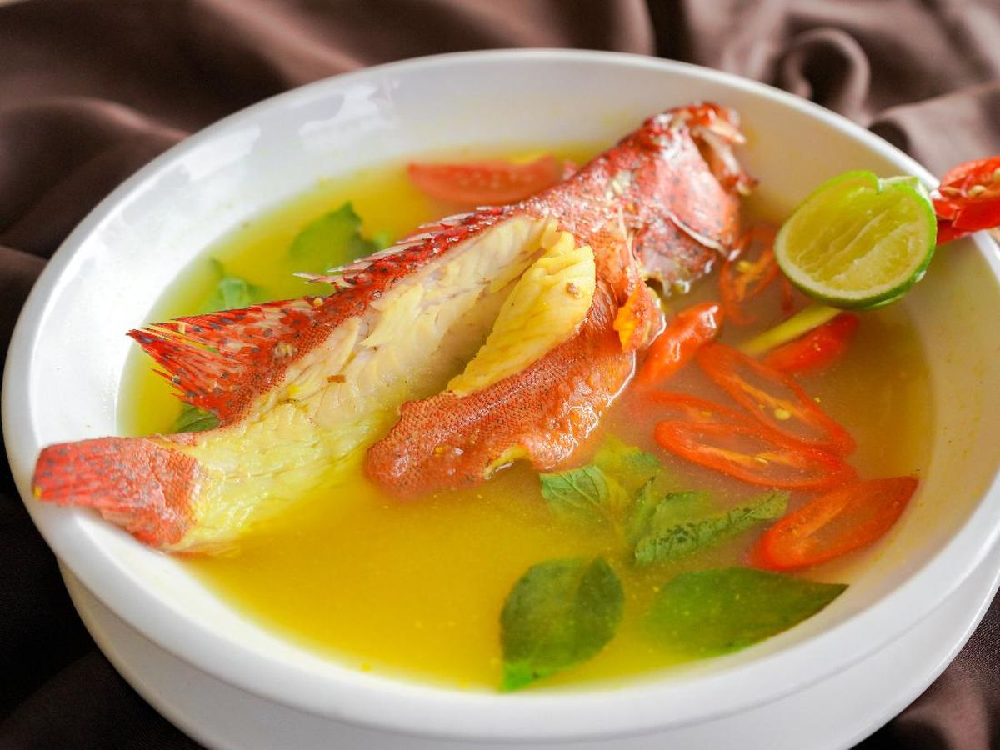
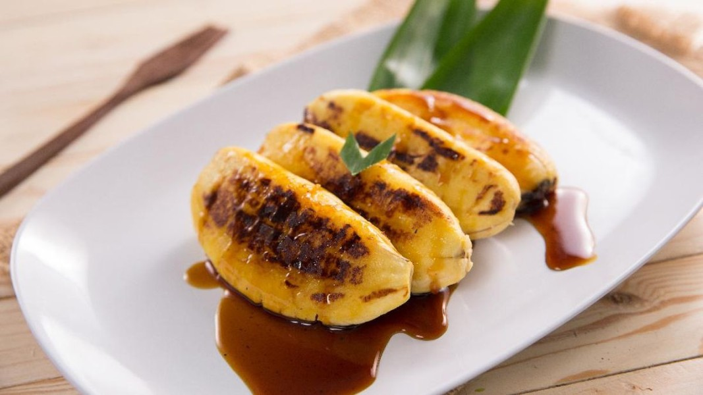

Labuan Bajo: Gerbang ke Keajaiban Timur
Nikmati pesona bahari, komodo legendaris, dan pulau-pulau eksotis.
Jelajahi Sekarang✨ Destinasi Pilihan

Pulau Komodo
Rumah bagi Komodo, kadal purba raksasa yang mendunia.

Pink Beach
Pantai berpasir merah muda yang unik dan menawan, surga snorkeling.

Pulau Padar
Pemandangan tiga teluk dengan warna pasir berbeda dari puncak bukit.
🍽️ Kuliner Khas Labuan Bajo

Seafood Bakar
Ikan segar, udang, cumi-cumi yang dibakar langsung dari laut.

Ikan Kuah Asam
Hidangan sup ikan dengan rasa asam segar yang menggugah selera.

Pisang Gepe
Pisang bakar khas Flores dengan saus gula merah dan kelapa parut.
🎬 Video Inspirasi: Pesona Labuan Bajo
Saksikan keindahan alam bawah laut dan daratan Labuan Bajo yang memukau.
ℹ️ Info Wisata & Transportasi
Panduan penting untuk perjalanan yang nyaman ke Labuan Bajo:
- Cara menuju Labuan Bajo (Pesawat ke Bandara Komodo)
- Transportasi Lokal (Sewa kapal, Mobil, Motor)
- Tips Wisata Bahari dan Etika di Taman Nasional Komodo